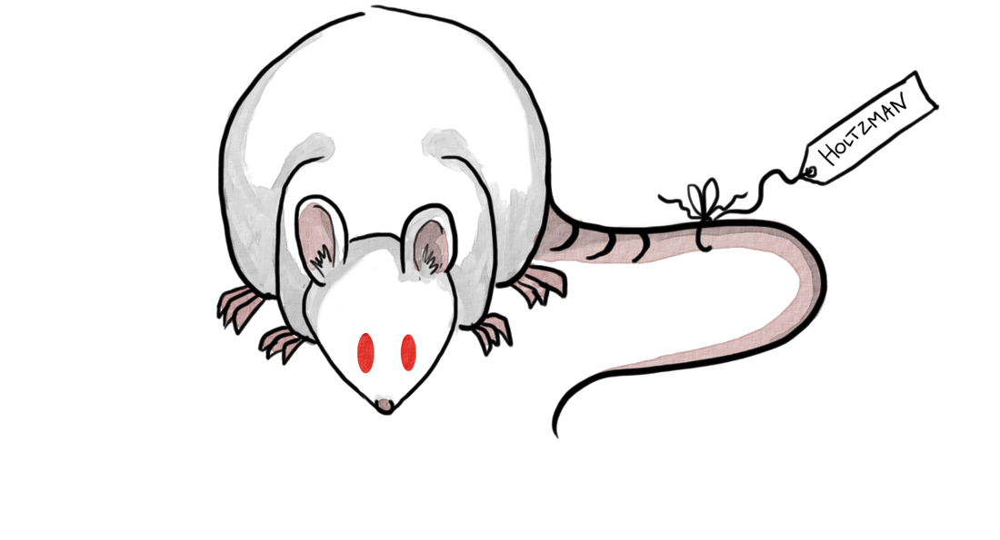
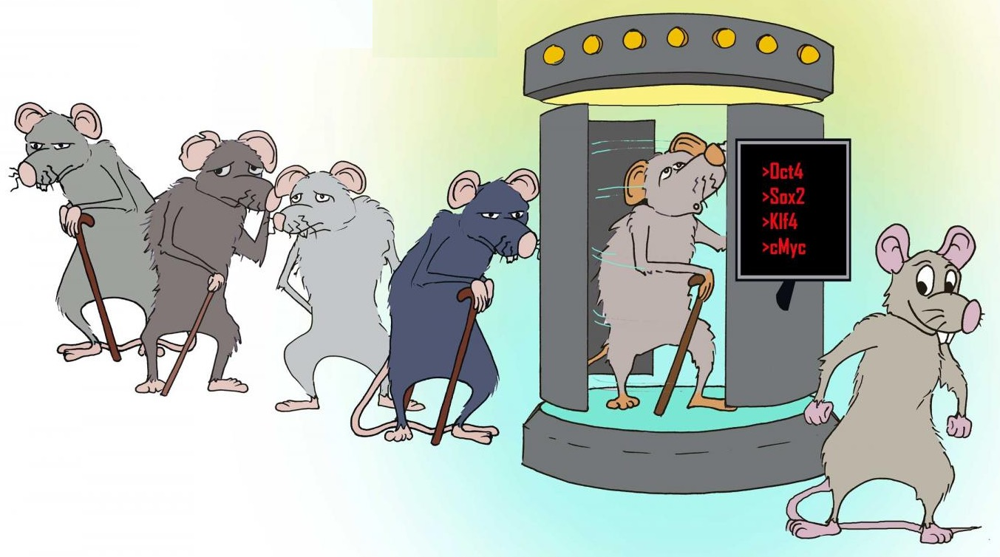
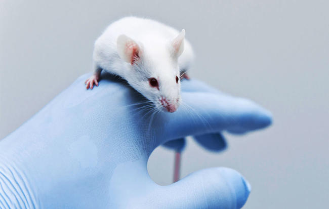

L'animalerie de l'INSERM
Lors de mon stage je me suis rendu à l'animalerie, je suis allé voir si les souris avaient assez d'eau et à manger, si non il faut leur mettre de la nourriture et de l'eau. Pour rentrer dans l'animalerie il faut, comme pour la salle de culture mettre une blouse, une charlotte, un masque et des sur-chaussures. Je n'étais pas autorisé à prendre des photos mais je peux décrire l'animalerie, il y a:
-une pièces pour s'habiller avec la blouse, la charlotte.... pour assurer l'hygiène.
-une pièce où se trouve la litière, la nourriture, des cages vides ainsi que des cabanes pour les souris.
-une pièce où se trouve les cages avec des souris dedans d'une autre équipe de recherche.
-une autre salle où se trouve les souris de l'équipe 910.
L'unité 910 utile principalement des souris ou des rats pour ses experiences, cependant d'autres animaux présents dans une autre animalerie peuvent être utilisé comme les cochons ou les insectes.
Les conditions de vie des animaux à l'INSERM
"L’expérimentation animale est encadrée par des dispositifs éthiques et réglementaires garantissant le respect et la bientraitance des animaux utilisés"
- Acclimatation et adaptation de l'animal
Effectivement les animaux sont parfois amener a être transporté jusqu’au lieu où ils seront utilisés à des fins de recherche.
Après tout transport, une période d’acclimatation est nécessaire. Elle a pour objectif de stabiliser les animaux au plan physiologique et comportemental. C’est une démarche indispensable pour le bien-être des animaux et pour la validation des résultats expérimentaux.
- Le devenir de l'animal
A l'INSERM on determine le futur de l'animal a la suite d'une procédure, le devenir de l'animal doit permettre de réduire le plus possible sa douleur, sa souffrance ou son angoisse potentielle.
- Maintien en vie et réutilisation
L'animal doit recevoir les soins appropriés avant, pendant et après les procédures expérimentales. Il est placé sous la surveillance d'un vétérinaire, il est hébergé dans des conditions assurant son bien-être. Il est possible de réutiliser les animaux dans des procédures expérimentales mais ceci doit être en accord avec la réglementation. Elle ne peut se faire qu'avec l’avis du vétérinaire, lorsque l'animal a pleinement retrouvé son état de santé et de bien-être et s’il n’a pas été soumis précédemment à une contrainte jugée sévère.
Placement ou remise en liberté
Selon la réglementation, il est possible de placer ou de remettre en liberté l'animal dans un habitat approprié adapté, les éspeces ayant été utilisés dans des procédures expérimentales. Ceci est délivrée par le préfet, sous certaines réserves : l'état de santé de l'animal le permet, il n'existe aucun danger pour la santé publique, la santé animale et l'environnement.
- l'euthanasie
L'euthanasie des animaux utilisés pour la recherche peut s'imposer pour diverses raisons : exigence du protocole expérimental (pour un prélèvement de tissus ou d’organes), risque de dommages durables pour l’animal après l’étude... L'euthanasie doit alors être réalisée selon une méthode appropriée (annexe IV de l'arrêté du 1er février 2013) et par une personne formée. Elle est suivie d’un constat de décès et doit être notifiée sur le registre des animaux.Pourquoi expérimenter sur des rats et des souris ?
Il faut savoir que les souris representent 61% des animaux de laboratoire en Europe et les rats 14 % soit un total de 75% pour ces petits rongeurs.
Ces animaux possède plusieurs avantages:- Ils sont très doux et donc très facile à manipuler
- Ils sont petits et donc facile à gerer
- Ils sont facile a "stocker" : on peut facilement mettre une centaine de rats en cage au même endroit.
- Ils se reproduisent très vite (la gestation est d'environ 3 semaines).
- Dans la majorité des cas ce qui est applicable pour le rat, l'est aussi pour l'homme.
- "Les rats sont proches de nous sans l'etre trop"
On peut donc dire que les animaux sont l'outil le plus important pour tous les chercheurs. A l'INSERM, pour l'unité 910, ces rongeurs sont indispensables à la comprhension de la maladie de la progéria et a l'élaboration d'un traitement.